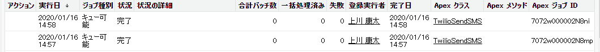

SMS送信履歴
SMS送信履歴の確認方法について説明します。
活動履歴での確認
SMS送信成功時
SMS送信成功時に、以下のような活動履歴が生成されます。
| 項目 | API参照名 | 内容 |
|---|---|---|
| 件名 | Subject | SMS送信：メッセージ内容(20文字以上の場合省略表記) |
| 期日 | ActivityDate | ジョブ実行日 |
| 優先度 | Priority | Normal |
| コメント | Description | To: 宛先電話番号 Direction: outbound-api Twilio URL: TwilioダッシュボードSMS送信ログURL Body: 送信メッセージ |
| 状況 | Status | Normal |
| 名前 | WhoId | リードや取引先責任者など、人を表すオブジェクトの関連先を表示 |
| 関連先 | WhatId | 取引先、商談、キャンペーン、ケース、カスタムオブジェクトなど、人以外のオブジェクトの関連先を表示 |
SMS送信失敗時
SMS送信失敗時に、以下のような活動履歴が生成されます。
| 項目 | API参照名 | 内容 |
|---|---|---|
| 件名 | Subject | SMS送信が失敗しました。管理者にお問い合わせください。 |
| 期日 | ActivityDate | ジョブ実行日 |
| 優先度 | Priority | Normal |
| コメント | Description | statusCode= 200番台以外 requestBody= リクエスト内容 responseBody= エラーメッセージを含むレスポンス内容 |
| 状況 | Status | Normal |
| 名前 | WhoId | リードや取引先責任者など、人を表すオブジェクトの関連先を表示 |
| 関連先 | WhatId | 取引先、商談、キャンペーン、ケース、カスタムオブジェクトなど、人以外のオブジェクトの関連先を表示 |
Apexジョブでの確認
ガバナ制限を回避するために、リクエストを20件づつのジョブに分けて実行しています。 それぞれのジョブ実行について、Apex ジョブにて確認できます。

Twilioダッシュボードでの確認
活動履歴のコメントにある、Twilio URL（https://www.twilio.com/console/sms/logs/SM*）からTwilioダッシュボードで詳細なログを確認できます。 SMS送信ログ確認の詳細はこちら
Tips
こちらのリンクからもSMS送信のログ一覧が確認できます。Programmable SMS Logs